CẤU HÌNH YÊU CẦU và HƯỚNG DẪN CÀI ĐẶT PHẦN MỀM
1. Cấu hình tối thiểu máy tính sử dụng và các điều kiện khi tham gia khai báo:
Các điều kiện cần và đủ để cài đặt phần mềm ECUS5VNACCS, thực hiện khai báo tờ khai, chứng từ đến cơ quan Hải quan, doanh nghiệp cần đảm bảo các điều kiện dưới đây:
- Đảm bảo máy tính có kết nối internet khi truyền dữ liệu tới Hải quan.
- Có thiết bị chữ ký số và tài khoản khai báo VNACCS.
Cấu hình máy tính để đảm bảo chạy phần mềm ECUS5VNACCS:
A - Cấu hình đối với doanh nghiệp sử dụng mô hình máy đơn:
| Cấu hình tối thiểu |
Cấu hình đề nghị |
- Hệ điều hành: WindowXP SP1 hoặc cao hơn
- Ổ cứng (HDD): Ổ cứng còn trống tối thiểu 10GB hoặc nhiều hơn
- Màn hình: Có độ phân giải tối thiểu 1024 x 768
- Bộ nhớ trong (RAM): Tối thiểu dung lượng bộ nhớ 2GB trở lên.
|
- Hệ điều hành: Windows 7; Windows 10
- Ổ cứng (HDD): Còn trống tối thiểu 20GB hoặc nhiều hơn
- Màn hình: Có độ phân giải từ 1024 x 768 trở lên
- Bộ nhớ trong (RAM): Đề nghị dung lượng bộ nhớ 4GB trở lên
|
B - Cấu hình máy chủ (đối với doanh nghiệp sử dụng mô hình máy chủ - máy trạm):
| Cấu hình đề nghị |
- Hệ điều hành: Windows 7,10; Windows Server 2008 SP2 hoặc cao hơn.
- Ổ cứng: 50GB trống hoặc nhiều hơn.
- Bộ nhớ trong (RAM): Tối thiểu dung lượng bộ nhớ 8GB trở lên.
|
2. Hướng dẫn cài đặt phần mềm ECUS5VNACCS:
Để thuận tiện cho các doanh nghiệp trong việc cài đặt và sử dụng phần mềm, chúng tôi xin hướng dẫn đầy đủ các bước thực hiện như sau:
Bước 1:
Tiến hành tải bộ cài phần mềm tại địa chỉ website www.thaison.vn
Doanh nghiệp lưu ý lựa chọn bộ cài cho phù hợp với hệ điều hành máy tính của mình:
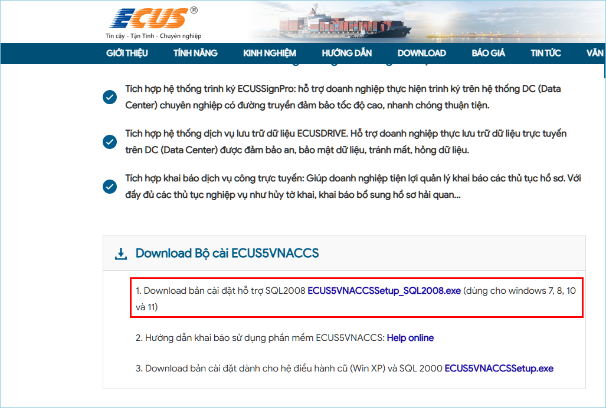
Bước 2: Cài đặt phần mềm ECUS5VNACCS
Để cài đặt phần mềm, bạn nhấn đúp chuột vào file bộ cài mới tải về, màn hình các bước cài đặt sẽ hiện ra như sau (lưu ý: Đây là hướng dẫn cho trường hợp doanh nghiệp mới hoàn toàn, nếu là doanh nghiệp cài lại bạn vui lòng xem thêm hướng dẫn tại mục
3. Các trường hợp khác phía cuối).
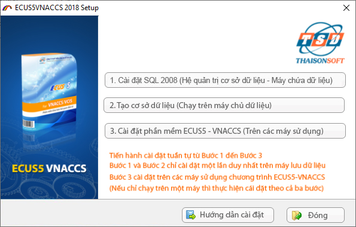
Thực hiện cài đặt lần lượt các bước theo đúng thứ tự 1, 2, 3.
Cài đặt hệ quản trị Cơ sở dữ liệu SQL.
Nhấn vào mục (1) để tiến hành cài đặt hệ quản trị cơ sở dữ liệu SQL server (nếu máy tính đã cài SQL thì bạn không cần phải thực hiện bước này nữa). Màn hình cài đặt hiện ra như sau:
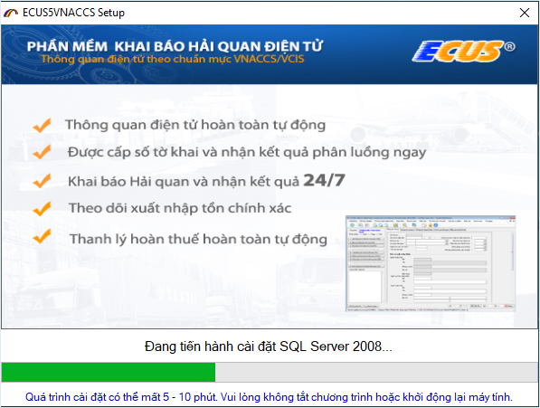
Các bước thực hiện hoàn toàn tự động, bạn chỉ cần đảm bảo kết nối mạng internet ổn định và chờ trong khoảng thời gian từ 5 - 10 phút. Khi quá trình cài đặt hệ quản trị cơ sở dữ liệu hoàn tất, màn hình thông số cấu hình kết nối hiện ra như sau:
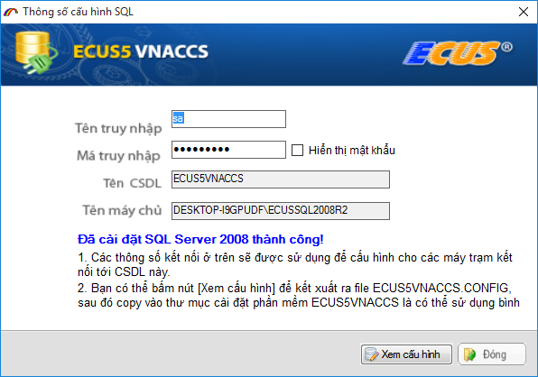
Nếu cài đặt phần mềm trên nhiều máy tính khác nhau, bạn hãy lưu lại cấu hình để copy vào thư mục cài đặt trên các máy tính khác hoặc để thiết lập thông số kết nối Cơ sở dữ liệu.
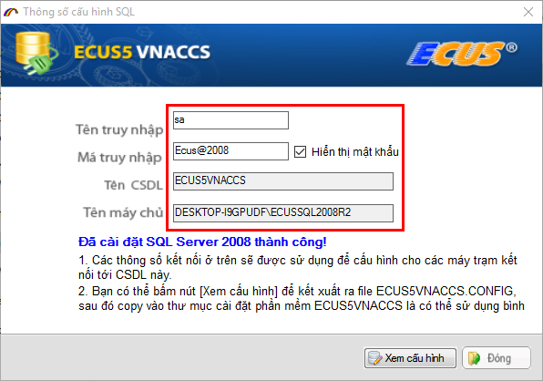
Nhấn nút Đóng để chuyển sang bước tiếp theo.
Tạo Cơ sở dữ liệu cho chương trình.
Tạo mới CSDL phần mềm bằng cách nhấn vào mục số (2) trong màn hình ba bước cài đặt.
Cửa sổ tạo cơ sở dữ liệu hiện ra như sau:
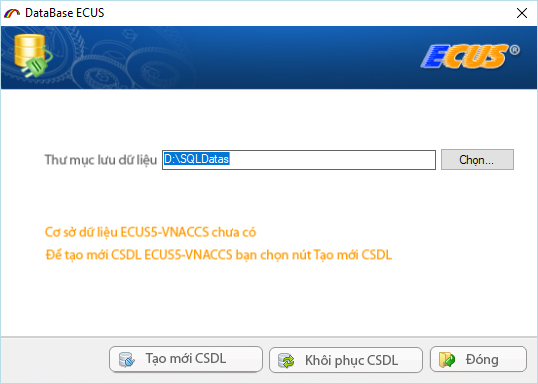
Thư mục lưu dữ liệu được đặt ngầm định là D:\SQLDatas
Nếu máy của bạn không có ổ D thì bạn có thể chuyển sang ổ đĩa khác bằng cách sửa lại ký hiệu ổ đĩa lưu dữ liệu, ví dụ: E:\SQLDatas
Nhấn vào nút Tạo mới CSDL để tiến hành tạo dữ liệu cho phần mềm, thành công sẽ hiện ra thông báo như sau:
Sau khi hoàn thành việc cài đặt hệ quản trị CSDL và tạo mới CSDL cho phần mềm, bạn tiến hành cài đặt phần mềm ECUS5VNACCS.
Cài đặt phần mềm ECUS5VNACCS.
Nhấn vào mục (3) trong màn hình ba bước cài đặt, màn hình cài đặt phần mềm hiện ra như sau:
Chọn nút Next > để tiếp tục, thư mục cài đặt chương trình được mặc định là ổ D:\ECUSDATA, nếu bạn muốn cài đặt ở một ổ đĩa khác thì nhấn nút Browse.. để thay đổi:
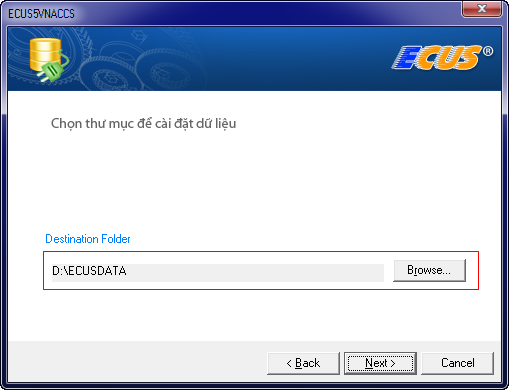
Nhấn Next để tiến trình cài đặt tự động bắt đầu
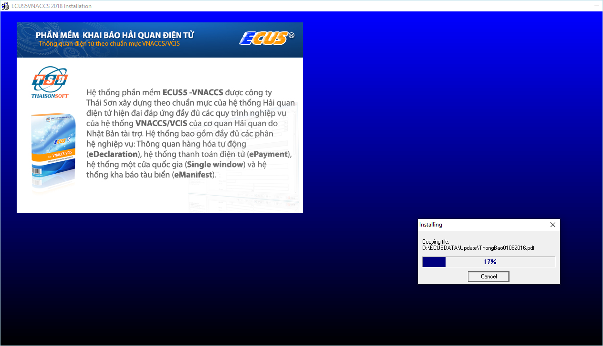
Cài đặt thành công, bạn tiến hành khởi động lại máy tính, sau đó nhấn đúp chuột vào biểu tượng phần mềm trên Desktop để chạy chương trình:
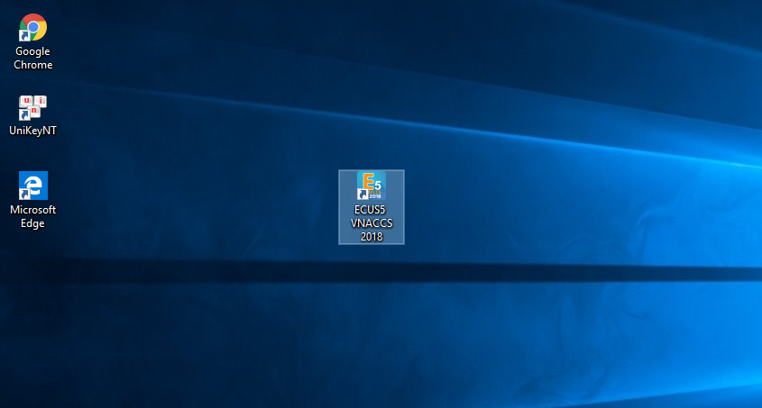
Lần đầu chạy chương trình, doanh nghiệp cần phải nhập thông tin của doanh nghiệp, các thông tin này sẽ được đưa vào tờ khai, chứng từ để gửi lên Hải quan. Do đó, doanh nghiệp cần lưu ý để nhập cho chính xác. Sau đó nhấn nút Đồng ý để tiếp tục.
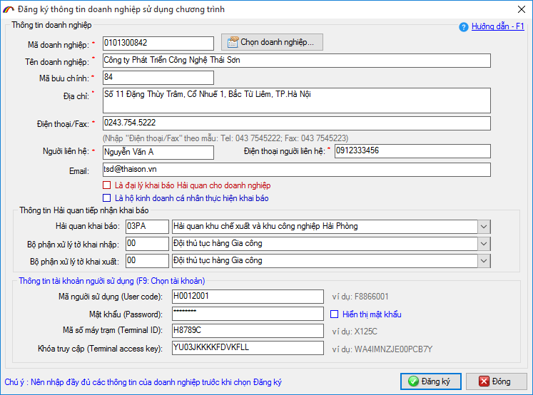
Xác nhận lại các thông tin vừa nhập, nếu đã chính xác thì bạn nhấn nút Đồng ý.
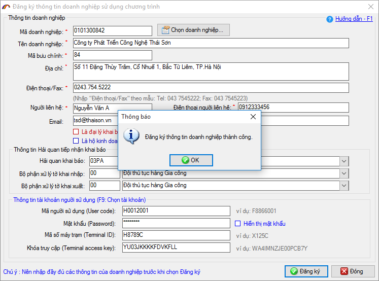
Cuối cùng màn hình đăng nhập hiện ra, bạn nhấn nút Đăng nhập để truy cập vào chương trình (tên truy cập và các thông số bạn không cần phải thiết lập gì thêm).
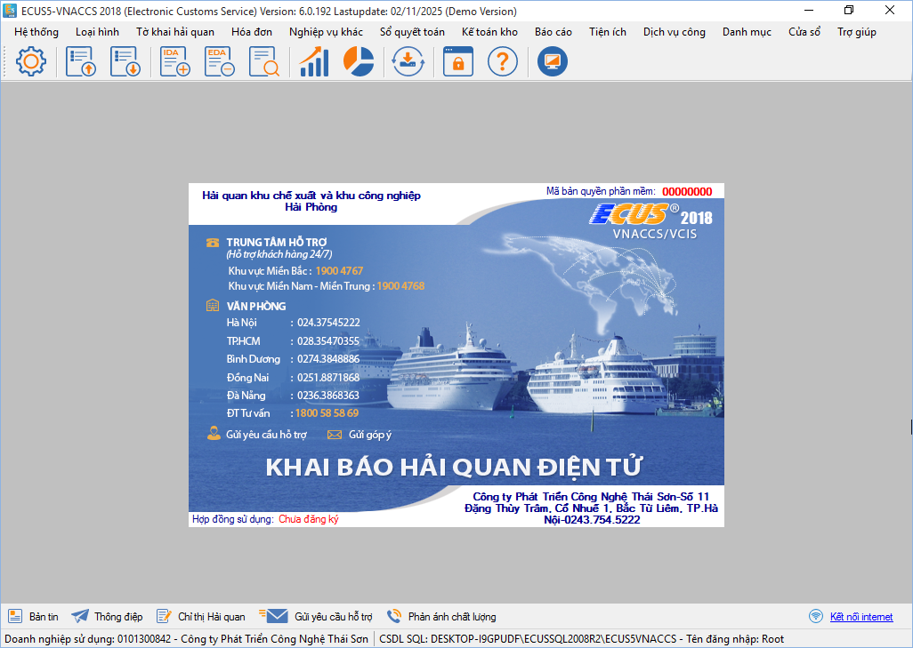
Chọn đơn vị Hải quan thường xuyên khai báo và nhập thông tin tài khoản khai báo VNACCS, sau đó nhấn ghi lại (đóng hoặc nhấn OK nếu có các thông báo khác hiện ra):
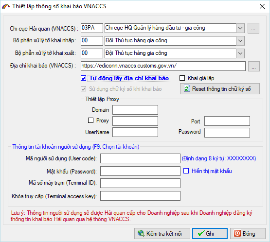
Như vậy các bước cài đặt phần mềm mới đã hoàn tất, bạn có thể bắt đầu sử dụng chương trình để khai báo tờ khai, chứng từ lên cơ quan Hải quan.
3. Hướng dẫn các trường hợp cài lại, khôi phục dữ liệu.
Trường hợp doanh nghiệp cài lại phần mềm do máy tính phải cài lại Hệ điều hành hoặc đổi máy tính mới. Các bước cài đặt bạn thực hiện bình thường như cài mới đã hướng dẫn ở trên, xin lưu ý các mục sau để khôi phục CSDL trước đây đang sử dụng.
a) Khôi phục CSDL từ file đang sử dụng, có định dạng như sau:
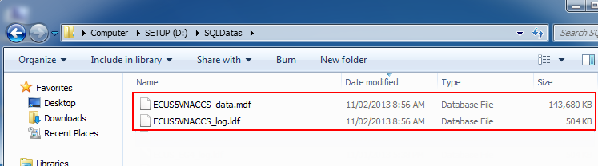
Để khôi phục dữ liệu dạng file này bạn chọn Từ file CSDL sau đó Chọn file để trỏ đường dẫn vào thư mục lưu trữ file này, chọn Thực hiện và chờ có thông báo thành công :
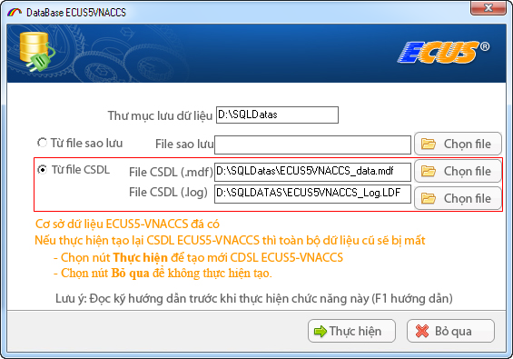
b) Khôi phục CSDL từ file sao lưu, backup.
Là dạng file mà trong quá trình sử dụng chương trình bạn thường xuyên sao lưu dự phòng (dạng tenfile.BAK), hãy đảm bảo file sao lưu của bạn là mới nhất, dữ liệu khôi phục sẽ có đến ngày bạn sao lưu :
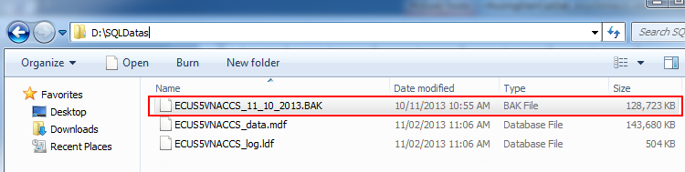
Với dạng file này bạn chọn lựa chọn Từ file sao lưu và trỏ đường dẫn tới vị trí lưu file, sau đó thực hiện và chờ kết quả thành công :
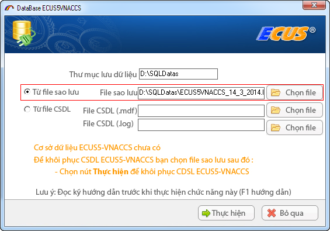
Chúc các bạn thực hiện thành công, mọi vướng mắc xin vui lòng liên hệ trung tâm hỗ trợ khách hàng 24/7 của Công ty Thái Sơn trên toàn quốc.
Bản quyền © thuộc về Công ty TNHH Phát triển công nghệ Thái Sơn